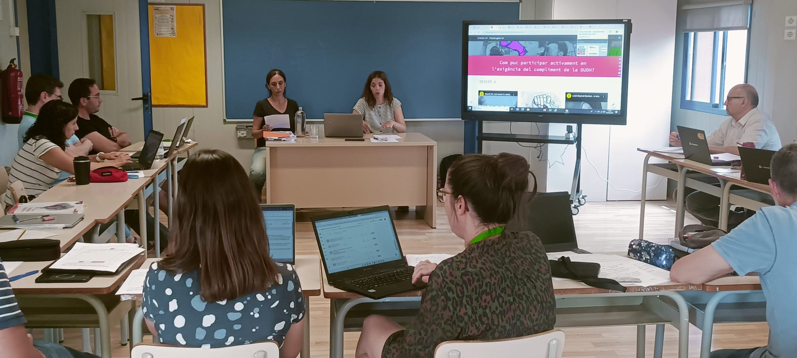

Sesiones prácticas y comprensibles
Traducimos currículo, evaluación y metodologías activas a ejemplos, decisiones y herramientas que el equipo puede usar enseguida.
Trabajamos con centros, claustros, coordinaciones y equipos que necesitan ordenar procesos, aterrizar marcos pedagógicos y convertirlos en herramientas útiles para el día a día.

Traducimos currículo, evaluación y metodologías activas a ejemplos, decisiones y herramientas que el equipo puede usar enseguida.
Ayudamos a priorizar, secuenciar y convertir objetivos generales en pasos concretos y sostenibles.
Creamos piezas visuales que hacen visibles acuerdos, procesos y marcos compartidos dentro del centro.
Definimos con vosotros el punto de partida, el público y la prioridad del proceso.
Preparamos una propuesta clara con estructura, materiales y tono adaptados al momento del centro.
La formación va acompañada de recursos reutilizables para facilitar seguimiento y transferencia.